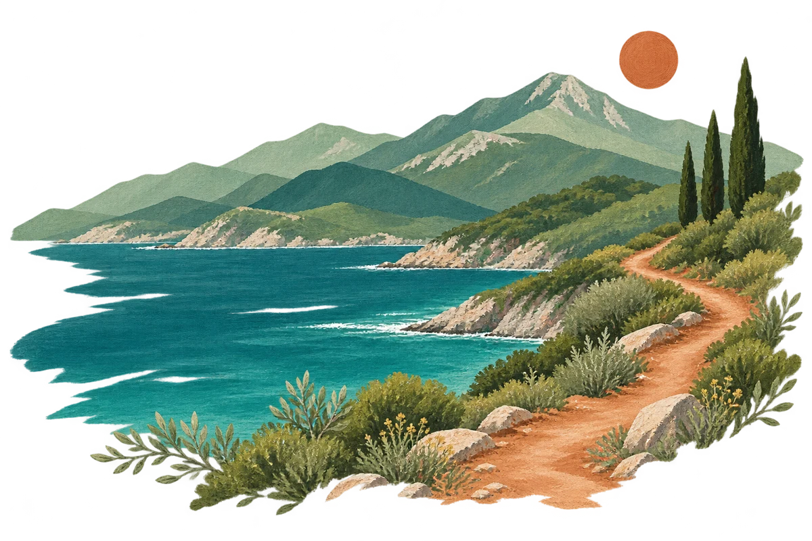
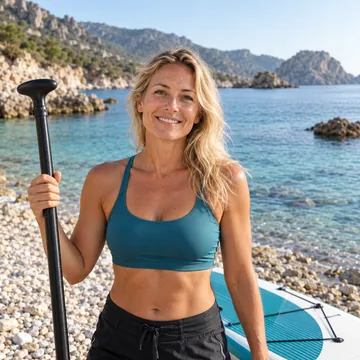
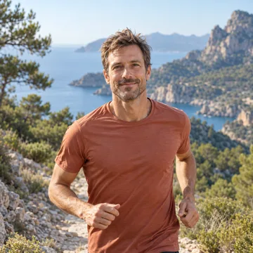
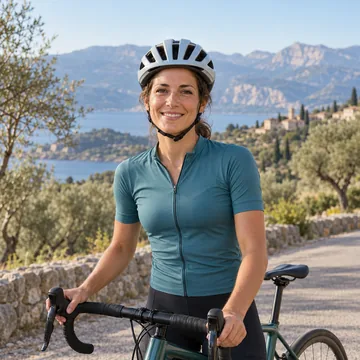

Find your pace.
Explore relaxed days by the water or more active adventures in the hills — there’s room for both.
THE PEOPLE. THE PURPOSE. THE OUTDOORS.
Different paces. One shared direction.
Discover outdoor experiences and keep your preparation in one place. Salt & Summit makes room for the day ahead.

Explore relaxed days by the water or more active adventures in the hills — there’s room for both.
Use a preparation list for each adventure to cover the essentials, set deadlines and choose your priorities.
Tick things off as you go and follow your progress, so you can head out feeling ready.
GOOD COMPANY MAKES THE DIFFERENCE

Founder
In the founder role, Izzi represents a simple idea: make room for the outdoors, whatever your pace. This profile brings the water-loving side of Salt & Summit, from an easy paddle to a day exploring the coast.
That spirit shapes the project: inviting experiences, clear information and a little preparation to help turn a good idea into a day out.
Instagram
Activity coordinator
Mark’s activity coordinator profile brings curiosity and a sense of challenge to the team. This profile represents the pleasure of finding a new trail, trying something different and choosing an adventure that suits your energy.
The focus is on helping you compare the options, understand the details and build your own plan, one manageable step at a time.
Instagram
Community coordinator
Marianne’s community coordinator profile reflects good company and shared encouragement. Her profile represents the social side of getting outside, whether that means a gentle ride or a more demanding day on the road.
It is a reminder that everyone starts somewhere. Salt & Summit makes space for different paces and personal goals, with progress you can follow as you prepare.
InstagramTeam roles are fictional and shown for this student project. They do not imply affiliation with or endorsement by the athletes.
SMALL DETAILS. BETTER DAYS.
Illustrative feedback for this student project.